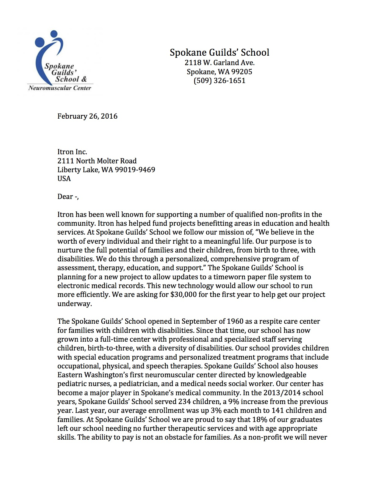
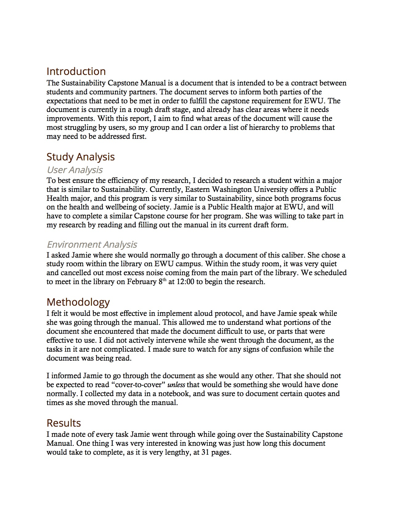
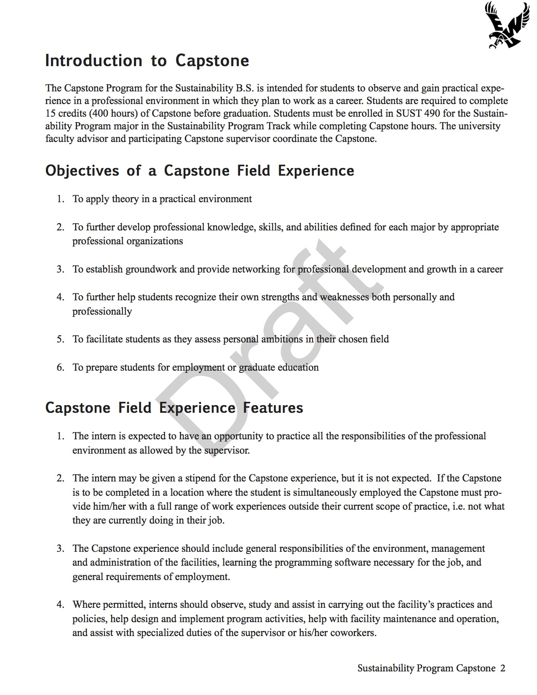
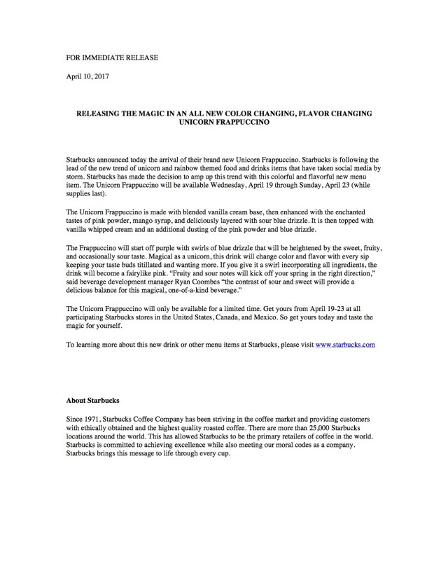
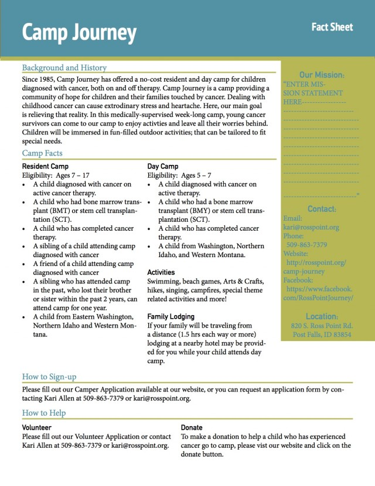
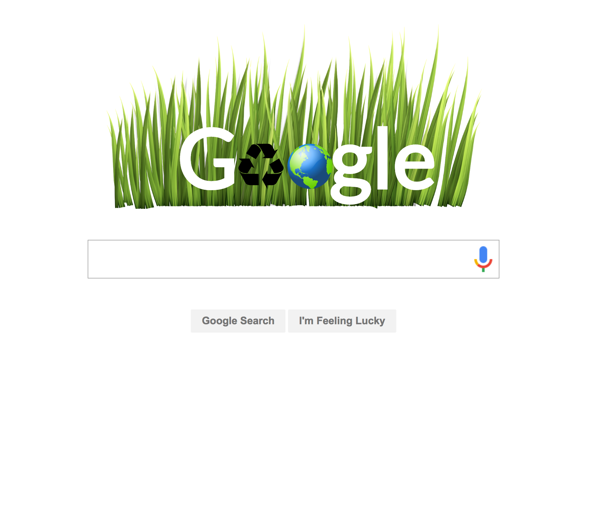

This was a grant proposal written on behalf of a 501(c)(3) nonprofit, Spokane Guilds’ School & Neuromuscular Center. This is an early intervention, special education program offered to children birth-to-three years old. The grant was for an update to their medical file system to electronic medical records. With all costs totaled, this would cost the school approximately $30,000 to implement. The grant required research for the community need and for potential funder. Ultimately, the grant was addressed to Itron requesting the funds. The grant to several weeks to complete and involved much collaboration with team members and clients.
Letter of Intent
Letter of Intent written on behalf of Spokane Guilds’ School addressed to Itron requesting a $30,000 grant for electronic medical records. Thorough research proved Itron to be a strong match with the Spokane Guilds’ School core values. The letter briefly covers background, the community need, and reasoning behind the grant request. The letter needed to cover enough of the need to perk the interest of the funder enough to follow up with the actual grant proposal. This is essential for a successful grant.
Usability Research
An individual usability test of original documentation of a EWU capstone program manual. The task was to present findings after conducting the user-based test. The test used think-aloud protocol and note taking data collection. I ensured to document any time the user faced any kind of confusion or statements made during the completion of the document. With this data, I made a thorough analysis and made recommendations for changes regarding the redesign of the document to enhance the overall usability of the manual. The document was created and designed in Microsoft Word and then exported as a PDF. With this project, I was able to get a better understanding of the manual and could apply critical thinking when it came to solving the design flaws within the document.
Manual Redesign
A group based project was to redesign the Sustainability B.S. Capstone Manual to enhance usability for the users. This was done on behalf of Eastern Washington University staff. To find out what areas of the document were causing the most confusion, our group ran multiple usability tests on the original document and our design prototypes. Prior to this redesign, the manual contained many design inconsistencies and styling flaws that made the manual confusing for the user. After our redesign, the manual was more cohesive and provided users with a better experience. Since it was a group project, it also required a lot of team collaboration and time management.
Product Press Release
A formal example of a product press release. This release was to announce the new menu item at Starbucks, the unicorn Frappuccino. To effectively write a press release it is necessary to understand your target audience and have the ability provide information displaying the new product in a positive light that will create the desire to go purchase the product yourself. The release should also catch the attention of any possible journalists or bloggers who will also purchase the product and will leave reviews for the product further enhancing sales. The press release covers what is being released, who is releasing it, where you can get it, and when you can get it. It was also important to stick to the theme of the drink, which is supposed to be ‘magical’ and give a fun vibe throughout the release without sounding unprofessional.
Fact Sheet
A fact sheet written on behalf of the nonprofit Camp Journey. This is a summer camp for children affected by cancer. The camp was in need an effective fact sheet that could be provided to potential donors. This fact would provide basic information about the background and history of the camp, as well as other important information that would be beneficial for donors to know. Style wise, the camp staff still wanted to show a “child-friendly” appearance and a sheet that was easy to read while also looking inviting.
Poster Symposium
Poster designed using Adobe InDesign for EWU’s 20th Annual Student Research and Creative Works Symposium featuring my experience with service-learning. It describes the process of preparation and creation of a grant written for a community partner. The creation of the poster used skills involving written communication, design choices, summarize project, and ability to demonstrate academic theories and principles in application to technical communication and civic responsibility. The poster ended up being a successful document, as I was able to implement design principles while also conveying academic research and rationale.
Movie Trailer Website
This was a website designed for a web design class. The project was to design a website around a specific movie trailer. The theme and style should be coherent to the theme of the movie. For this project, I chose the movie Les Miserables. Since the movie is rather dreary, I chose muted colors such as gray, but also incorporated red and blue to indicate the French flag and the upcoming revolution. The website is responsive for all screen sizes. It features the use of JavaScript plugins fitText.js and fitVid.js. Both of these were applied to increase the responsiveness of the overall layout.
Google Doodle
The project for assigned by a web design course. The project was to design a “Google Doodle”. This is a CSS (keyframes) animated design that would be featured as a Google homepage. This design needed to incorporate elements of JavaScript, and also apply a SCSS file. This enhanced the ability to apply effective animations for the design. My design revolved around the theme of “Earth Day”.